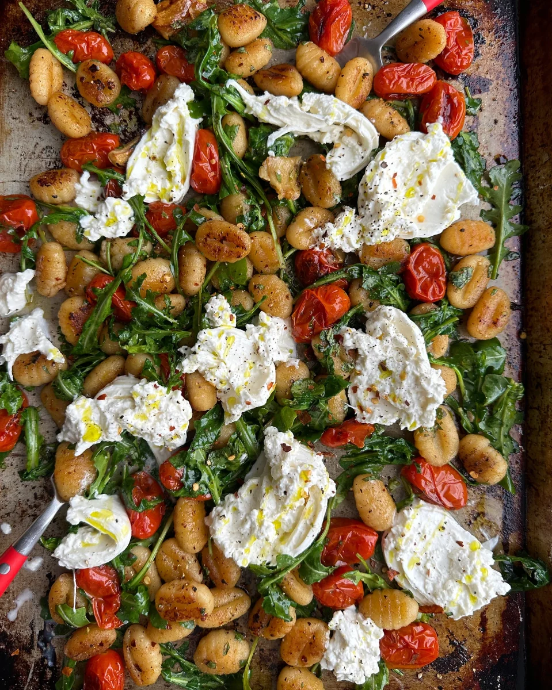

Sheet Pan Gnocchi

Description
This is a delicious recipe made by Dan Pelosi, aka "GrossyPelosi".
A combination of cherry tomatoes, gnocchi, arugula, and burrata alongside a delicious vinaigrette make this a meal you won't soon forget.
Below is the list of ingredients and instructions on how to make this exciting yet simple weeknight dinner.
Ingredients
Main Ingredients
- Sheet Pan Gnocchi
- 1-pound package potato gnocchi
- 2 cups cherry tomatoes
- 6 cloves garlic, smashed
- 3 tablespoons olive oil
- 1/4 teaspoon freshly ground black pepper
- 1/2 teaspoon salt
- 1/4 teaspoon red pepper flakes, optional
- 2 heaping cups arugula
- 1 large ball burrata cheese
Basil Vinaigrette
- 1/4 cup finely chopped fresh basil leaves
- 1/8 cup olive oil
- 1 tablespoon white wine or balsamic vinegar
- 1/2 teaspoon salt
- Juice of 1/2 lemon
Instructions
- Preheat oven to 425℉.
- Place gnocchi, cherry tomatoes, garlic, olive oil, salt, pepper and red pepper flakes on a sheet pan and toss together until well combined. Spread evenly in the pan.
- Place sheet pan in preheated oven and bake for 20 minutes, giving everything on the pan a toss halfway through roasting to ensure that the gnocchi crisp evenly.
- While the gnocchi bakes, make the basil vinaigrette. Place basil, olive oil, vinegar, salt, and lemon juice in a small mixing bowl. Whisk until well combined and set aside.
- Remove sheet pan from the oven and top gnocchi and tomatoes with the arugula and drizzle with the basil vinaigrette. Toss to coat evenly. Place the ball of burrata in the center of the sheet pan, and carefully break open the cheese over the top of the gnocchi. Serve immediately and enjoy!